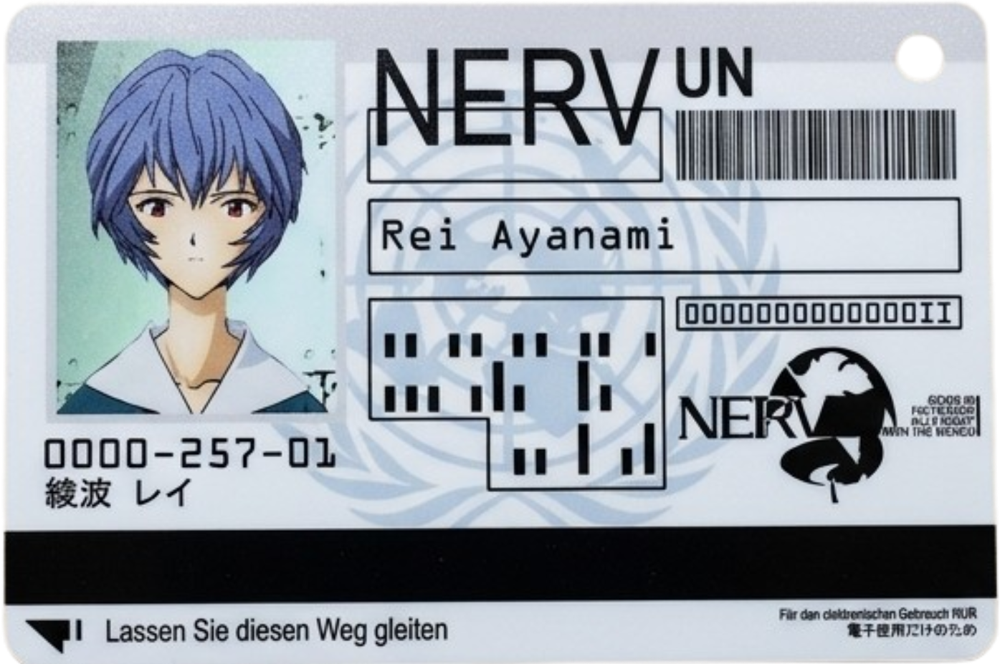
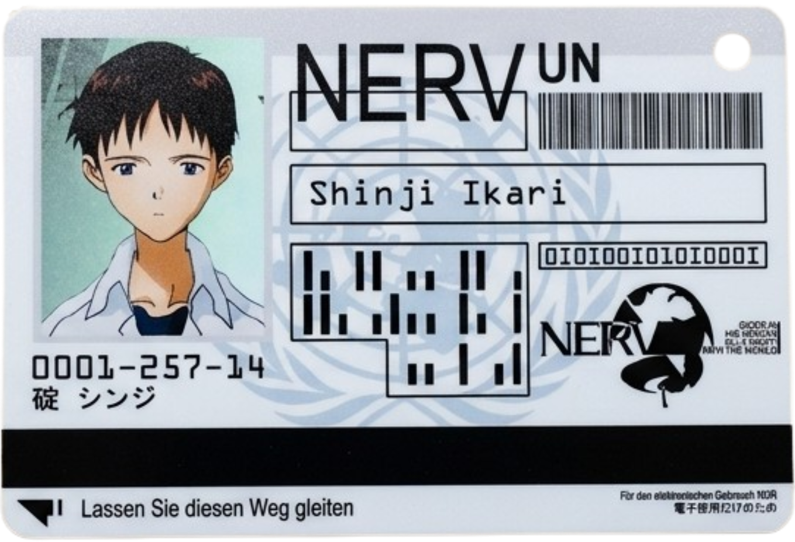
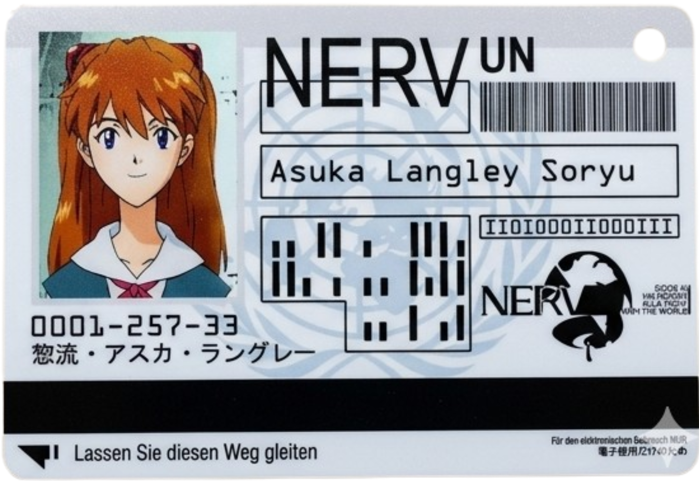
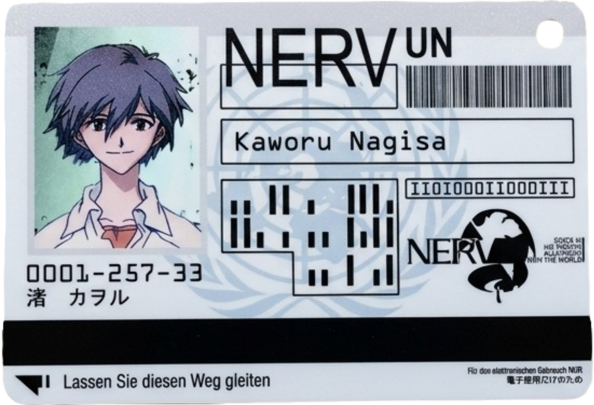

⚠ AVISO DE SEGURIDAD ⚠
Este sistema contiene información clasificada como SENSIBLE y superior. El acceso no autorizado está prohibido y será sometido a investigación inmediata por la División de Seguridad Interna de NERV. Todo el personal debe verificar sus credenciales antes de proceder.
PILOTOS DE EVA ASIGNADOS

Primer Niño: Rei Ayanami
Sujeto femenino. Respuesta emocional mínima. Sincronización óptima con EVA-00. Prioridad absoluta a la misión.

Segundo Niño: Shinji Ikari
Sujeto masculino. Perfil psicológico inestable. Alta sincronización con EVA-01. Tendencia a la evasión y dependencia emocional.

Tercer Niño: Asuka Langley Soryu
Sujeto femenino. Alto coeficiente intelectual. Comportamiento agresivo y competitivo. Sincronización elevada con EVA-02.

Cuarto Niño: Kaworu Nagisa
Sujeto masculino. Patrón de sincronización anómalo. Nivel de amenaza clasificado. Interacción emocional dirigida.